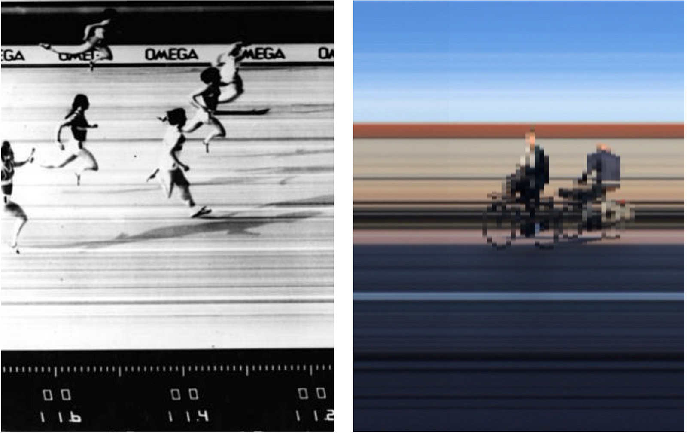

The results achieved through artgram are the outcome of reimagining analog photographic techniques, to generate beautiful and unexpected pictures. I built artgram for fun but also as a reaction to an oversaturated image culture, where images are captured, most of the time, with the idea of always having an audience to showcase perfect shots. Artgram is experimental, the captures are low fidelity and highly involved. The app offers a variety of experimental imaging techniques to choose from, including slit-scan (vertical and horizontal), strip photography (vertical and horizontal), down-sampling, and shadowing. I don't want to get into the details of these techniques, but I'm going to use strip photography just to explain the process and research behind artgram.

On the right: Picture taken with artgram.
Strip photography was widely employed in the past for capturing photo-finish moments in sporting events. Traditionally, a strip photograph was taken using a custom camera that exposed a rolling film through a narrow and elongated aperture, rather than the typical circular aperture used in conventional cameras.
Strip photography has gained popularity in recent years, being practiced with custom cameras in both analog and digital formats. The exploration of strip photography was not motivated by custom cameras or post-processing algorithms, but rather by recognizing that we could revisit that technique with a common smartphone to capture motion in a distinctive and playful way. The stripes in the background give a sense of the moment, while the elements in motion pop from a striped background. I played and experimented with other techniques as well and decided to collect them all in artgram. The resulting artifacts are quite unique because the analog techniques have been adapted to suit the medium of smartphones, prioritizing artistic expression over the pursuit of a perfect final shot.

Another principle behind the creation of artgram is the emphasis on capturing the moment. While post-processing offers various methods to achieve the same techniques, it fails to capture the essence of real-time experiences. Post-processed images lack the "aura" that comes with the immediate and unaltered capture. Artgram allows you to appreciate, save, share, or discard your photo at the moment of capture, or have a new idea and create a new image right there, in the present moment. The focus is on embracing spontaneity and creative exploration in real-time.
Artgram encompasses techniques for time or space displacement, controlled primarily through a single main parameter. For example, strip photography captures time on a single frame by modulating the sampling frequency of vertical or horizontal lines. Slit-scan photography captures consecutive lines at different times, with the main parameter determining the time difference between each line. Downsampling reduces image information by selecting specific blocks based on the parameter while shadowing blends multiple frames with the speed of decay as the main element to adjust. A slider control in artgram allows users to modify the main parameter for each technique.
By embracing reimagined analog techniques and countering the culture of image oversaturation and superficiality, artgram empowers users to capture moments in an unexpected way. It invites individuals to step away from the mundane and rediscover the act of crafting each frame. Embrace the art of artgram, and allow yourself to create, exploring the unexpected, one frame at a time.